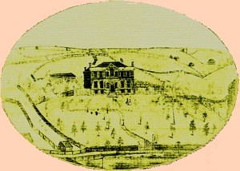

by
Stefan Bielinski
Peter Waldron Yates was born in August 1747. He was a middle child in the large family of Albany blacksmith John G. and Rebecca Waldron Yates. He grew up at his father's third ward smithy and on their farm across the river in Rensselaerswyck.
Peter W. Yates married twice. The two marriages produced eleven children. In 1767, he was a month shy of his twentieth birthday when he wed an even younger Ann Margarita Helms of New York City. She died in 1794. In 1798, he took for his second wife Mary Terbush. Before the war, he was a member of St. Peter's Anglican church. Afterwards, he was a pewholder at the Albany Dutch church where most of his children were baptized.
This son of a middling tradesman was able to climb out the working class, acquire a legal education, and, by 1768, had become an attorney. For more than three decades, his practice flourished even though interrupted by the war with Britain. Afterward, he trained a number of students including the poet and artist, St. John Honeywood, who took their places in the post-war legal profession.
In 1772, he was elected alderman for the first ward - giving the upstart Yates family three of the six seats on the Albany city council. Re-elected in 1773, 1774, and 1775, he attended the last meeting of the council held under the royal government on March 25, 1776. Although still not thirty-years-old, Peter W. Yates found himself in the front ranks of Albany leadership!
In 1775, he was elected to the Albany Committee of Correspondence as a member for the first ward. However, he resigned two months later after publishing a derisive essay expressing doubts over the course resistance was taking. Re-elected, he declined to serve! Anglican church member and connected to important people within the provincial establishment, this native son was watched closely throughout the war. However, he later was granted a land bounty right for service in conjunction with the First Regiment of the Albany County Militia.
With the coming of peace, Peter W. Yates entered the statewide political arena. In 1784, he was elected to represent Albany in the New York State Assembly. In 1786, he was a delegate to the Continental Congress. He was a prominent Albany Anti-Federalist. A lifelong member, from its earliest days, he was an officer in the Albany Masonic Lodge.
Attorney Yates lived in Albany's first ward - probably on property that he had inherited from his father in 1776.  At the start of the war, he had broken ground on a new home south of the core city on a large piece of land separated from Schuyler Mansion by the Beaverkill. In 1782, the dwelling was not quite finished but a few years later, a visitor painted Peter Yates's mansion. It figured prominently on the map drawn by Simeon De Witt in 1790. In 1799, his "South End" estate was valued at $20,790 - second only to that of his neighbor, Philip Schuyler. In 1800, he still counted four slaves as members of his household. He owned a number of other Albany real estate parcels as well. He also was able to acquire land in other parts of New York.
Following more than four decades as an Albany mainstay, after 1810, he moved west. He became a judge serving western New York. As a result, he changed residences. Peter W. Yates died at Caughnawaga (Montgomery County) in March 1826 at the age of seventy-nine.

notes
 Sources: The life of Peter W. Yates is CAP biography
number 4430. This profile is derived chiefly from family and community-based resources.
Sources: The life of Peter W. Yates is CAP biography
number 4430. This profile is derived chiefly from family and community-based resources.
first posted: 2/15/03; last revised 5/1/03